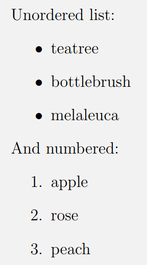
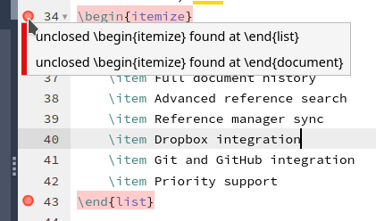
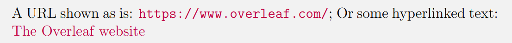
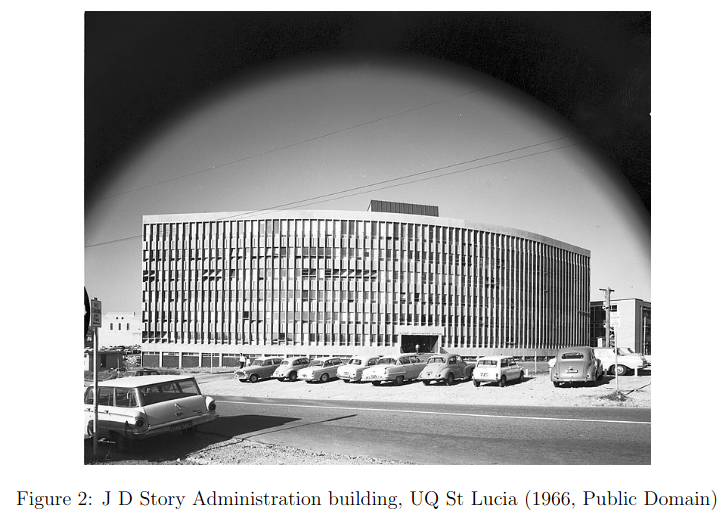
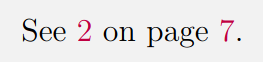
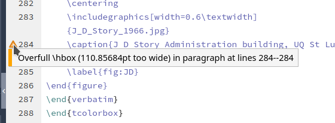
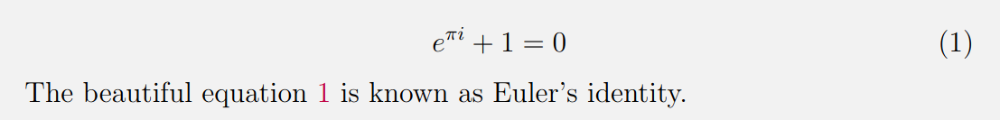

Overleaf: write and collaborate on \(\LaTeX\) documents
Introduction
\(\LaTeX\) is a markup language and software system that allows writing beautiful documents. It is widely used in professional mathematics writing in particular because of its powerful mathematical formula typesetting, but it is also popular in other fields, including philosophy, physics, economics, engineering and linguistics.
The strong point of LaTeX is that it allows you to create very consistent documents, while concentrating on the contents and the structure, rather than worry about the appearance. The style of the document can then be changed independently of the contents.
To author today’s document, we use Overleaf: an online platform that facilitates editing and collaborating on LaTeX documents.
At UQ
The UQ community has access to Overleaf Professional accounts. The extra features offered (when compared to free accounts) are:
- Unlimited collaborators
- Real-time track changes
- Full document history
- Advanced reference search
- Reference manager sync
- Dropbox integration
- Git and GitHub integration
- Priority support
To access your professional account, sign into Overleaf with your UQ email address.
New project
In Overleaf, creating a project will create a new space to store, upload and edit files.
On the main page, once logged in:
- Click on “New Project”
- Select “Example Project”
- Give it a name and click “Create”
Overleaf will then take you to a new document called “main.tex”: the source code is in the panel on the left, whereas the “compiled” document is shown on the right.
Overleaf interface
Apart from the source and PDF panels, Overleaf includes a left-hand sidebar that shows the project files and the file outline (very useful to jump from section to section).
The top-left “Menu” button reveals another sidebar with project options, editor customisations and help links.
You can resize and hide the panels at you will to make editing the document more comfortable.
Editing
Preamble
The top of the source code, before the \begin{document} tag, is called the Preamble. This is where the settings and main metadata of the document are stored. Overleaf automatically populated with some defaults, but as we need more features to write our document, we regularly go back to the preamble to add extra packages and modify their settings.
The following table describes what the example document contains in its preamble:
| Tag | What it does |
|---|---|
\documentclass{article} |
Set the document type |
\usepackage[english]{babel} |
Set the document language |
\usepackage[...]{geometry} |
Set the page and margin sizes |
\usepackage{amsmath} |
Display options for math equations |
\usepackage{graphicx} |
Include graphics |
\usepackage[...]{hyperref} |
Include hyperlinks |
\title{Your Paper} |
Document title |
\author{You} |
Document author |
Make sure you update the title and author of the document. We might also want to change the paper format to “a4paper” instead of “letterpaper”, and add an extra \date{...} tag to fix the date.
The tab key
Some of the most useful shortcuts in Overleaf are provided by the tab key. It helps autocomplete your code: using the tab key, you can autocomplete the name of a command from the dropdown list of suggestions, and some values can also be autocompleted inside the curly braces (for example, when using references to figures).
The same key also helps move outside of the curly braces.
Compiling
After editing the document, you will have to compile the document to see the results. This can be done with the green “Recompile” button, or using the ctrl + return shortcut.
Editing the contents
The contents of the document are in between the \begin{document} and \end{document} tags.
You can switch between the “Source” editor, which shows you the LaTeX code, and the “Rich Text” editor, which is more similar to visual text editors we are used to, like Microsoft Word or LibreOffice Writer – although you will quickly find that the features of the Rich Text editor are very limiting.
Try adding a new section to your document (with the “Insert Section Heading” button), and styling it with the “Rich Text” mode. See what the corresponding code looks like in the “Source” mode.
Lists
Now, add a list to your article. The tag itemize is for unordered lists, whereas enumerate is for numbered lists:
Unordered list:
\begin{itemize}
\item teatree
\item bottlebrush
\item melaleuca
\end{itemize}
And numbered:
\begin{enumerate}
\item apple
\item rose
\item peach
\end{enumerate}Which results in the following:

Errors
In the “Source” editor, you will notice that you get some visual feedback if your code is not valid. Try for example to misspell one of the tags opening or closing your bullet list: the whole block is highlighted in red, and you can get a hint of what the issue is by hovering over the red mark in the margin. If you try to compile the document, you will also see an error message in the Logs (next to the “Recompile” button).

Hyperlinks
To be able to add hyperlinks, you will need to add the hyperref package at the top of your document, with this line:
\usepackage{hyperref}You’ll then be able to add external URLS like so:
A URL shown as is:
\url{https://www.overleaf.com/};
Or some hyperlinked text:
\href{https://www.overleaf.com/}{The Overleaf website}Which would result in this block of text:

Commenting the source
As you are editing the source that defines what the documents will look like when compiled, it might be useful to include comments that are only visible when looking at the source. It is also useful when collaborating on a document, to make sure others can make sense of a syntax not commonly used.
You can add a comment to your source by starting a line with %.
For example, to let others know what the hyperref package is for, you could add at the top of the page:
\usepackage{hyperref} % for including hyperlinksGraphics
To add graphics to a document, the graphicx is needed, which you can add at the top of the document with:
\usepackage{graphicx}You will then be able to add graphics with:
\includegraphics{example_figure.png}In Overleaf, if you want to keep things tidy, you can upload images to a dedicated directory. However, it will be easier to then declare that directory as the default one for images, at the top of the document. For example, if all the images are stored in an “images” directory, we should add this to the top of the document:
\graphicspath{ {images/} }Try it now:
- Find and download a Public Domain featured picture from Wikimedia Commons
- Upload the picture to the “images” directory
- Add the picture to the document
This is the simplest form of adding graphics to the document, but we often want to add other associated information (like a caption) and modify placement options.
Overleaf makes it easy to add a code template for figures by adding the opening tag \begin{figure} to the source code. You should automatically end up with the following:
\begin{figure}
\centering
\includegraphics[width=0.5\linewidth]{}
\caption{Caption}
\label{fig:enter-label}
\end{figure}This allows us to specify:
- The horizontal position of the figure
- The width of the figure
- The name of the file
- The figure caption
- The label that will allow cross-referencing of the figure
Try to move your previous picture to this new block of code, adding a caption and a label.
One important option that is missing from this template is the placement specifier. It comes straight after the \begin{figure} tag, in between square brackets. If it is not specified, the figure will default to being placed at the top of the page. If you want to place the figure where the code is located, you can use the h position, which stands for “here”. Other placement options can be found in the .
About the placement of the figure: an important detail is that the (lowercase) “h” option place the picture where it the code is (for example when page breaks move a picture to the next page). To really force the location of a figure relatively to the text, you can use the (uppercase) “H” option, which requires the extra float package (i.e. you need to add \usepackage{float} to your preamble).
Another important option is the **width of the picture}. If a picture is too large, it might not be displayed at all, simply giving you a warning along the lines of “float too large”. The width of a figure can be specified with the `\includegraphics+ tag.
As an example, the following code:
\begin{figure}[H]
\centering
\includegraphics[width=0.8\linewidth]{J_D_Story_1966.jpg}
\caption{J D Story Administration building, UQ St Lucia (1966, Public Domain)}
\label{fig:JD}
\end{figure}Results in the following figure:

Alternatively, you can insert a figure by using the “Insert Figure” button in the toolbar, or by copy-pasting it into the document. This opens a dialog that allows to choose the file’s name and location, specify the width and turn caption and label on or off.
Because a label was used, we can now reference the figure itself and the page it is on:
\ref{fig:JD} % reference the figure
\pageref{fig:JD} % reference the page the figure is onOverleaf will suggest figure labels when using these two tags, so you can autocomplete your code.
The following code:
See \ref{fig:JD} on page \pageref{fig:JD}.Results in the following text:

Warnings
As you write the source code of your document, and compile it regularly, you might see warnings pop up in the margin of the source panel. By hovering the pointer over the icon, you should see extra information.

It is very common to see warnings about “overfull and underfull boxes” (“hbox” or “vbox”). These warnings are issued by the TeX engine the compile the document, and can usually be safely ignored. However, they might sometime help you spot undesirable typesetting, (e.g. some text overflowing to one side). Take note of them, but often won’t require you to take any action. If you want to learn more about these warnings, see the Overleaf documentation about overfull and underfull warnings.
All errors and warning are listed in the log view, which you can access with the “Logs and output files” button next to the “Recompile” button.
Equations
A lot of LaTeX’s power lies in its mathematical equation typesetting. For example, the following code:
\begin{equation} \label{eq:euler}
e^{\pi i} + 1 = 0
\end{equation}
The beautiful equation \ref{eq:euler} is known as Euler's
identity.Will produce this output:

Notice the use of labels for cross-reference, just like we used for figures.
Collaborating
You can share your document with the “Share” button at the top right of your screen, using your collaborators’ email.
It is possible to give different rights to different collaborators: you could decide that one person can edit the document, whereas another one can only see it.
Review and track changes
The “Review” button at the top of the screen will open a side panel showing the comments. Select some text and add a comment to the document you are collaborating on. Others can then reply to your comment.
This panel is also where tracked changes can be turned on. Changes will be shown in the same side panel as the comments. Collaborators can then accept or reject changes.
Chat
Finally, a chat feature is available in Overleaf. You can open it with the top-right “Chat” button.
History
You can see a history of versions by clicking the “History” button in the top right.
Specific versions can also be labelled, which might be useful to help navigate a complex history of versions, and direct collaborators to where major changes have happened.
Export and publish
To export the document to PDF, click on the “Download PDF” button above the compiled view panel.
Overleaf integrates some guidance to publish on a selection of platforms. You can see the publishers available by clicking on the “Submit” button in the top toolbar.
To make sure you can keep working on your document outside of Overleaf, or to submit the source files to a publisher, you will have to download the whole project, not just the compiled PDF. To do that, open the main menu (top right “Menu” button) and click on “Source”. You will then be able to download a zip archive containing all your .tex files, images, references files and others.
Templates
Overleaf provides many templates to choose from, which makes it easier to find a document style that looks right from the beginning and not spend too much time on finding the right packages and changing parameters in the preamble.
- Go to the main Overleaf page (up arrow button in the top toolbar)
- Click on “New Project”
- Choose from either:
- Institution templates
- One of the main templates listed
- The full list of templates
- In the template’s description page, click “Open as template”
See for example the Beamer template offered in the UQ templates (Beamer documents are used for creating presentation slides). This particular template also demonstrates the use of a LaTeX plotting package called pgfplots, which you can learn more about on Overleaf’s pgfplots documentation.
Account integrations
Your Overleaf account can be integrated with a variety of other services and platforms.
Git and GitHub
Git is a version control tool widely used to record a project’s history, notably for software development.
From a project, using the top-right Menu button, it is possible to:
- Clone the project repository to your own computer (and use Overleaf as a remote repository)
- Link the project to a GitHub repository
ORCiD
ORCiD is a unique identifier for researchers. Linking your Overleaf account to your ORCiD will automatically use it when submitting an article to publishers.
This option can be found in the account settings.
Reference managers
Overleaf integrates Zotero and Mendeley to easily import references into projects.
This option can be found in the account settings. You will then be able to use the “From Zotero” or “From Mendeley” options in the “Upload” dialog to import your library as a .bib file.
Once a .bib file is available in the project, it is possible to use the biblatex package to cite references and create a bibliography. For example, adding this to the preamble:
\usepackage{biblatex}
\addbibresource{references.bib}And then referencing in the document:
This section is sourced \cite{aguiar_invasion_2013}.
This other section as well \cite{akkemik_archaeology_2012}.
\section{Bibliography}
\printbibliographyIf you use EndNote, you should be able to export your library to a .bib file by using the BibTeX export style, and then upload it to your Overleaf project.
Many options are available to customise your citations and bibliography. To learn more, see the Overleaf documentation on bibliographies.
Accessibility
Unfortunately, it is not currently easy to create fully accessible PDFs using LaTeX (i.e. tagged PDF, or following full PDF/UA specifications). Some tools do exist to make the output more universally accessible, including a tool called make4ht to create HTML instead of PDF, and a package called tagpdf to explore the possibility of creating tagged PDFs. However, they are still very experimental, and only trying to patch a deeper issue in how PDFs are structured.
While there is work underway to integrate accessibility features in the underlying software, we are still a long way away from having access to these improvements on Overleaf, and the best that can be done for users is to style and structure our documents for improved accessibility. Here are some recommendations to keep in mind from the onset when working on any kind of document:
- Make sure all figures and tables are captioned, and that they are sufficiently described
- Do not include tables as pictures
- Avoid using text annotations, labels and titles inside pictures, and move that information to the main text
- If pictures contain text, it might be a better option to use vector graphics (like the SVG format) rather than raster graphics (PNG, JPG, etc.)
- Check the colours used throughout the document to make sure the contrast is sufficient, and the palettes are accessible to colourblind readers
- Give text descriptions to hyperlinks instead of only displaying the URL
- Keep the structure of the document simple
If you are interested in the topic of accessibility in LaTeX, here are some resources (many of which are rather technical):
Further resources
- Learn LaTeX in 30 minutes, by Overleaf
- Overleaf Webinars
- The full, comprehensive Overleaf documentation
- LyX is an Open Source desktop LaTeX editor, if you want to use an offline alternative on your own computer.
- UQ LaTeX templates, including the Thesis template
- A Quick Guide to LaTeX: a handy cheatsheet with common commands
- TeX StackExchange: questions and answers about LaTeX
Licence
This document and its source are released under the Creative Commons licence “Attribution 4.0 International” (CC BY 4.0). For the detailed licence text, please see the CC BY 4.0 page on the Creative Commons website.